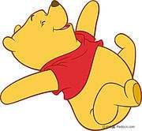

小熊队
一个有关小熊的故事
有一个小姑娘在树林里迷失方向了，找不到回家的路，她走啊走啊，就来到树林里一座小房子前面。
小房子的门开着。她往门里瞧瞧，屋里没人，她就进去了。这座小房子里啊住着三只熊。一只是熊爸爸，很大很大，毛蓬蓬的。一只是熊妈妈，比她小一点。还有一只呢，是小熊。三只熊都不在家。到树林里散步去了。
小房子里有两个房间，一个是吃饭用的，还有一个呢，是睡觉的。小姑娘走进了吃饭的房间，看见桌子上有三碗粥。一个碗很大，是熊爸爸的；一个碗呢，小一点，是熊妈妈的；还有一个碗呢，是最小的，是小熊的。每个碗的旁边还有一把勺子：一把很大，一把小一点的，一把很小。
小姑娘拿起最大的勺子，吃最大碗里的粥；又拿起了小一点的勺子，吃小一点碗里的粥；最后又拿起小勺子，吃蓝色小碗里的粥。她觉得小熊那碗粥是最好吃的。
小姑娘想坐下来，看见桌子旁边有三把椅子：一把很大，是熊爸爸的；一把小一点，是熊妈妈的；一把很小，还有个小坐垫，是小熊的。她要爬上大椅子，结果掉下来了；她爬上小一点的那把椅子，座着又觉得不舒服；她就坐上小椅子上了，啊，真舒服！于是，她就捧着蓝色的小碗，吃起粥来。吃啊吃啊，她把粥吃了个精光，然后就在小椅子上，摇晃起来了，摇呀摇啊，哎呀，小椅子给摇破了，小姑娘“啪”的一下，就摔到地上了。她爬起来，就把小椅子扶起来，就到隔壁房间去了。这个房间里有三张床：一张很大，是熊爸爸的，一张小一点，是熊妈妈的，还有一张是最小，是小熊的。
小姑娘躺到大床上，哎呀，太空了；躺到小一点的床上，又太高了；她躺到小床上，嘿，正合适，她啊，就在小床上，睡着了。
这时侯，三只熊回到来了，他们肚子都饿了，想吃饭。熊爸爸拿起他那个碗一看，用可怕的声音，哇哇地叫起来：
“谁动过我的碗？”
熊妈妈看看她那个碗，不那么响地也叫起来：
“谁动过我的碗？”
小熊看看他那个空小碗，也尖声尖气起来：
“谁动过我的碗，把粥全给吃光了？”
熊爸爸看看他那把椅子，用可怕的声音哇哇地叫了起来：
“谁坐过我的椅子，把它动过了？”
熊妈妈看看她那把椅子，不那么响的叫了一句：
“谁坐过我的椅子，把它动过了？”
小熊看看他那把破了的小椅子，尖声尖气地叫起来：
“谁坐过我的椅子，把椅子坐坏了？”
三只熊又来到隔壁的房间。
熊爸爸用可怕的声音哇哇地叫了起来
“谁睡过我的床，把我的被子都弄皱了？”
熊妈妈不那么响地叫了一句，
“谁睡过我的床，把被子都弄皱了？”
小熊在小床边放了一张小凳子，爬上了他那张小床，尖声尖气地叫了起来：
“谁睡过我的床？”可他突然看见了小姑娘，像给捅了一刀似的，叫了起来：“就是她！把她抓住！把她抓住，就是她！哎哟哟……把她抓住！把她抓住……！”小熊想上去咬小姑娘，小姑娘一睁开眼睛，看见了三只熊，连忙向窗子扑过去。窗子本来是开着的，她从跳出窗外逃走了，三只熊啊，到底还是没能追上她。